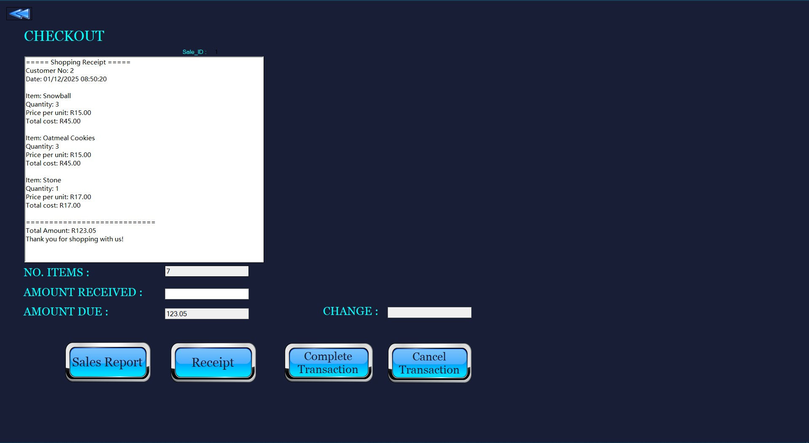

Point of Sale System
A comprehensive Point of Sale (POS) system built with C# and ASP.NET Core.
Features
- Inventory Management with real-time tracking and alerts
- Customer Management including profile creation and history tracking
- Sales Analytics including reports and trend visualization
Technology Stack
- Backend: C# with ASP.NET Core
- Database: SQL Server
- Reporting: Crystal Report Viewer
- Development Environment: Visual Studio
Screenshots

LINK TO THE PROJECT FILES!!
Sandile Allen Msezane
GitHub: @sandileallenmsezane
LinkedIn: Sandile Msezane